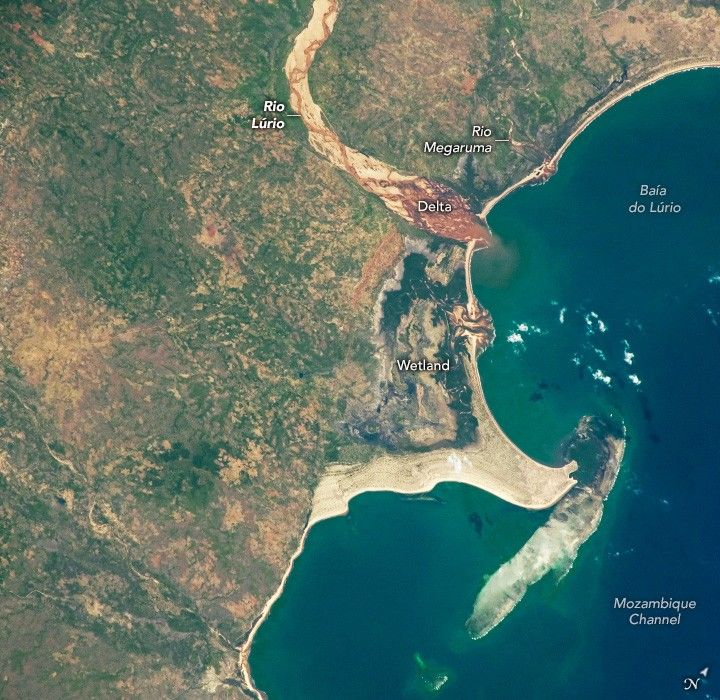

Mozambique’s Rio Lúrio
An astronaut aboard the International Space Station captured this downward-looking (nadir) photo of part of Mozambique’s northern coast in southeastern Africa. The light-toned Rio Lúrio snakes across the top half of the scene. Its delta empties into Baía do Lúrio, which opens into the Mozambique Channel. Just north of the delta, the smaller Rio Megaruma also enters the channel.
In this photo, the Rio Lúrio appears as a light-toned riverbed, indicating dry sand—evidence that the river does not completely fill its channel during periods of low flow. A narrow, darker line winding through the bed marks the active water flow. During high-flow events, however, the river occupies the entire width of its bed. The small sediment plume entering the bay further indicates the current low-flow conditions. Under high-flow conditions, a river of this size would produce a much larger sediment plume.
Sand from the Rio Lúrio is transported along the shoreline to the north and south of the delta by nearshore ocean currents, forming beaches along the entire coastline visible in this image. In the center of the view, the sand has accumulated to form a wide sandbar that protrudes four kilometers (2.5 miles) into the sea, connecting a coral island to the mainland. This composite feature—sandbar and island—is known to geologists as a tombolo.
The Mozambique Channel, a wide expanse of warm water between Mozambique and Madagascar, has nurtured the development of numerous coral reefs along the coasts of both countries. Reefs located north and south of the one shown here have been designated as Key Biodiversity Areas due to their high coral diversity and the associated variety of other organisms.